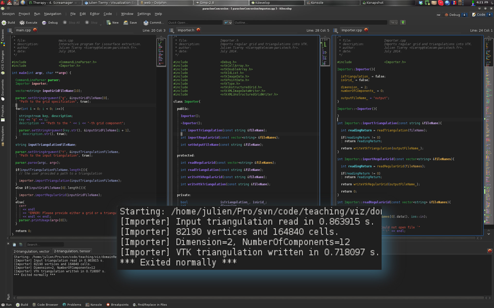
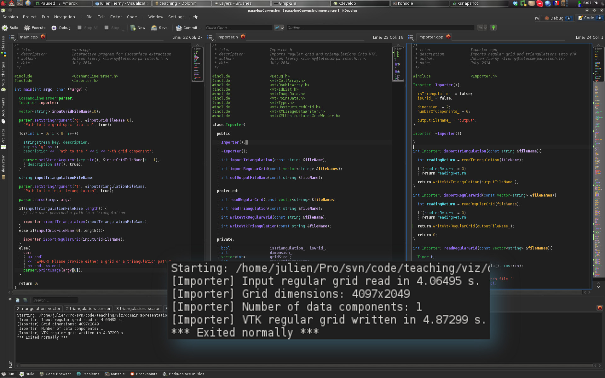

Goals
The goal of this exercise is to get familiar with the first practical step of any visualization task: data conversion.Each scientific field has its own traditions in term of data generation, leading to a variety of data file formats. Given a data-set that has been brought to you by a domain expert, prior to loading it into a visualization system (such as ParaView), most of the time it is necessary to convert it to a file format that is supported by the visualization system.
In this exercise, you will implement a data importer that converts input data files into VTK file formats, which will later enable you to load these data-sets in the ParaView exercise session and in the Data Party! session.
This exercise will enable you to review the concepts introduced in the lecture dedicated to Domain Representations.
After completing this exercise, you will be able to convert any data-set you generate in other classes and projects to produce insightful visualizations with ParaView.
Software prerequisites
· A recent version of VTK (runtime libraries and headers) should be installed (6.0 or higher);· A recent version of CMake should be installed (2.8 or higher).
The remainder of these exercise instructions assumes that the employed IDE is KDevelop (version 4.5 or higher) under Linux. However, this exercise can be achieved with any IDE under any OS. For non-Linux users, an easy alternative consists in installing a Linux system (such as Kubuntu) within a virtual machine (such as VirtualBox, a readily configured virtual machine is available HERE (md5sum: f72a2e455e1533baef1fe19e745070df, password: ttk).
Documentation
· An up-to-date documentation of the VTK library can be found HERE.· A light-speed introduction to C++ programming can be found HERE.
Getting started
Exercise package
· Download the exercise package HERE and extract it under your home directory.Importing the project in KDevelop
· Import the CMake project: Project -> Open / Import Project... and select the file CMakeLists.txt;· Build the program.
Project basic configuration
· Under Run -> Configure Launches...· Click on paraviewConversion;
· Click on the "Add new" icon button and select "Application" from the rolling menu;
· On the right, Project Target:paraviewConversion/paraviewConversion;
· Under Behavior, Working Directory, enter the path to the directory where the file CMakeLists.txt is located;
· Under Behavior, Arguments, enter: -t data/scalarFields/2-triangulation/data.tri (to load a scalar field defined on a 2-triangulation);
· Click on the OK button.
KDevelop basic usage
· To access the source files of the project, click on Projects tab on the left. Double-click on a source file to open and edit it;· To compile the code, press F8;
· To run the code, press Shift+F9;
· To run the code in debug mode, press F9
If you followed the previous instructions, at this point, your screen should look like the above screen-shot.
Data collection
The directory data/ contains 11 data-sets to import in VTK/ParaView. They are organized into sub-directories per type of field (scalar, vector, tensor) and domain type/dimension. To load a different data-set in your program, you need to edit the Arguments options of your project launch configuration (see above). Alternatively, you can add a new launch per data-set. Then, each of the different launches can be selected through the menu Run -> Current Launch ConfigurationCode skeleton
The code skeleton provided with the exercise package is mainly composed of 1 class:· Importer: This class is dedicated to the loading of the input data and its storage into a VTK file format.
At this point, the code skeleton provides the following features:
· Parsing of the command line arguments (i.e. the file name o the input data) in the main.cpp file;
· Place-holder functions:
·Importer::readTriangulation() to read a triangulation;
·Importer::writeVtkTriangulation() to write a triangulation in VTK file format;
·Importer::readRegularGrid() to read a regular grid;
·Importer::writeVtkRegularGrid() to write a regular grid in VTK file format.
You will write the content of these place-holder functions during this exercise.
Now, let's get the exercise started.
Importing data defined on triangulations
First, we will take care of the import of triangulations.Some scientists generated different data-sets (scalar fields, vector fields and tensor fields) defined on triangulations (see the data/ directory).
Hopefully for us, their data-sets are stored in a pretty simple file format which is ASCII-based (which can be opened with any text editor).
This file format is organized as follows:
· First line:
·(Dimension of the domain): 2 for triangle meshes, 3 for tetrahedral meshes;
·(Number of vertex attributes): at least 3 (for the x,y,z coordinates) plus additional attributes (1 for scalar fields, 3 for vector fields, 9 for tensor fields);
·(Number of vertices);
·(Number of highest dimensional cells): number of triangles for triangle meshes, of tetrahedra for tetrahedral meshes.
·Next, (Number of vertices) lines follow, one line per vertex. Each line stores in order the x, y, z coordinates of the vertex, then the additional attributes.
·Next, (Number of highest dimensional cells) lines follow, one line per cell. Each line represents the Identifiers (Ids, i.e., order of appearance in the previous list) of the vertices contained in the cell.
Question 1: Reading a triangulation
· Complete the function Importer::readTriangulation(). Given a file path stored in its argument fileName, this function should read the corresponding file (with an ifstream object) and fill the following internal variables of the Importer class (see Importer.h):·dimension_ stores the dimension of the data-set;
·numberOfComponents_ stores the number of vertex attributes;
·vertexData_ this vector should contain one entry per vertex, each entry containing a vector of attributes;
·cellData_ this vector should contain one entry per highest dimensional cell, each entry containing a vector of vertex Ids.
If you answered correctly this question, you should now see the following result:
Question 2: Importing a scalar field
· Complete the function Importer::writeVtkTriangulation(). Given a file path stored in its argument fileName, this function should use the information stored in the internal variables of the Importer class to:·To create a VTK object representing a triangulation (vtkUnstructuredGrid class);
·To fill this data structure with the information read in the previous question;
·To write it into a VTK file with VTK Input/Output features (vtkXMLUnstructuredGridWriter class).
Each of these steps is detailed in the following sub-questions.
Question 2.1: Object declarations
To create a VTK triangulation, one needs to declare objects of the following types:·vtkUnstructuredGrid: a class that can represent triangulations in 2D or 3D;
·vtkPoints: a class that represents a set of points (vertices);
·vtkDoubleArray: a class that represents multi-dimensional arrays of real numbers;
Note that for each of these, the appropriate header file (*.h) should be included in Importer.h.
VTK uses its own memory allocation and management system. This means that VTK objects cannot be declared directly. Instead, pointers to VTK objects must be declared and memory needs to be dynamically allocated as follows:
· vtkUnstructuredGrid *triangulation = vtkUnstructuredGrid::New();
The above line allocates the necessary memory for a vtkUnstructuredGrid object (with the call to the function New()) and declares a pointer (named triangulation) pointing to it.
Warning! Dynamic memory allocation requires some attention. Each object which has been dynamically allocated must be de-allocated when it is no longer used in order to free the corresponding memory. With VTK, for each dynamically allocated object, one typically needs to free its memory at the end of the function where it has been used (here at the end of Importer::writeVtkTriangulation()) with the following instruction:
· (*triangulation).Delete();
Question 2.2: Triangulation construction
Once all of the required objects (cf. list above) have been allocated, the construction of a vtkUnstructuredGrid is done as follows:· Fill the vtkPoints object with the content of the vertexData_ vector, with the function of the vtkPoints object called InsertNextPoint() which should be called for each vertex (each entry of vertexData_) with its x,y,z coordinates as arguments.
· Link the vtkPoints pointer to the triangulation (function SetPoints() of the vtkUnstructuredGrid object);
· For each entry of the cellData_ vector, insert a new cell in the triangulation. This is done by using the function InsertNextCell() of a vtkUnstructuredGrid object. This function takes as arguments a type of cell (VTK_TRIANGLE for triangles, see the following documentation page for other types of cells) and the address of a vtkIdList object containing the indices of the vertices of the cell.
·For each vertex of the input mesh, each of its attributes should be stored in the global vtkDoubleArray object. Beforehand, this object should be initialized with the right number of attributes (function SetNumberOfComponents(), 1 for scalars, 3 for vectors, 9 for tensors) and with the right number of entries (function SetNumberOfTuples(), this number should be equal to the number of vertices). To assign an entry to the global vtkDoubleArray, one needs to use its function called SetTuple() (see its documentation here).
·Finally, one needs to link the global vtkDoubleArray object to the vtkUnstructuredGrid object. For scalar fields, this would be done as follows:
(*(*triangulation).GetPointData()).SetScalars(dataArray);
if triangulation points to a vtkUnstructuredGrid object and dataArray points to a vtkDoubleArray object.
Question 2.3: Writing an output VTK file
To write into a VTK file a vtkUnstructuredGrid object, one needs to use a special object of the type vtkXMLUnstructuredGridWriter. · To specify the file name of the output file, use the function SetFileName() which takes as argument a character string containing the file path. The internal variable outputFileName_ should already contain a default path (see the constructor Importer::Importer() which sets it to a default value) which should be extended with a valid extension (such as .vtu).· To link our triangulation object to the writer, one should use the function SetInputData(), which takes as argument the address of a vtkUnstructuredGrid object.
· Finally, to trigger the writing, one should use the function Write().
If you answered correctly this question, you should now see the following result:
Question 2.4: Let's visualize something!
If you carefully followed the instructions above, your program should have created a file named "output.vtu" in the directory containing the file CMakeLists.txt. From this directory, enter the following command (omit the "$" character):$ paraview output.vtu
Once ParaView is loaded, click on the "Apply" green button in the left banner. If you converted the file right, here is what you should be visualizing:
If this is the case, congratulations!
You've just imported your first data-set into ParaView! We'll learn more about ParaView in a following exercise.
Question 3: Importing a vector field
·Modify your function Importer::writeVtkTriangulation() to support vector fields: In particular:·The number of components for the vtkDoubleArray object should be set to an appropriate value;
·The function SetVectors() should be used instead of SetScalars() if the user provided a vector field data-set in the input;
·Add a new launch configuration to your project (see the instructions above) with the following "Arguments":
-t data/vectorFields/2-triangulation/data.tri
·Select this launch through Run -> Current Launch Configuration and run the program.
·If you answered correctly this question, you should now see the following result:
You can also verify that your output file is formatted correctly by opening it with ParaView (see the previous question).
Question 4: Importing a tensor field
·Modify your function Importer::writeVtkTriangulation() to support tensor fields: In particular:·The number of components for the vtkDoubleArray object should be set to an appropriate value;
·The function SetTensors() should be used instead of SetScalars() or SetVectors() if the user provided a tensor field data-set in the input;
·Add a new launch configuration to your project (see the instructions above) with the following "Arguments":
-t data/tensorFields/2-triangulation/data.tri
·Select this launch through Run -> Current Launch Configuration and run the program.
·If you answered correctly this question, you should now see the following result:

You can also verify that your output file is formatted correctly by opening it with ParaView.
Question 5: Importing volume triangulations
·Modify your functions Importer::readTriangulation() and Importer::writeVtkTriangulation() to make sure that they support volume triangulations.·Verify that your program is now able to handle volume triangulations with each of one of the fields (scalar, vector, tensor) defined on volume triangulations in the data/ directory. For instance:
·Add a new launch configuration to your project (see the instructions above) with the following "Arguments":
-t data/scalarFields/3-triangulation/data.tri
·Select this launch through Run -> Current Launch Configuration and run the program.
·If you answered correctly this question, you should now see the following result:
You can also verify that your output files are formatted correctly by opening them with ParaView.
Importing data defined on regular grids
Some scientists generated different data-sets (scalar fields, vector fields and tensor fields) defined on regular grids (see the data/ directory).Regular grids are traditionally stored as binary files. These files just contain the vertex attributes, line by line, slice by slice.
To be able to read these raw binary files, one need to know:
·The type of variable stored in the file (int, float, double, char, unsigned_char, etc.);
·The dimensionality of the grid (2D or 3D);
·The grid dimensions (width, height, depth).
For each data set defined on a regular grid, this information is stored in an ASCII file (directly readable with any text editor) named data.txt. Depending on the type of data (scalar, vector, tensor), several raw binary files need to be considered (one per vertex attribute).
Question 6: Setting up KDevelop
·Add a new launch configuration to your project (see the instructions above) with the following "Arguments":-g data/scalarFields/2-grid/data.txt -g0 data/scalarFields/2-grid/data.raw
Important note: Note that for regular grids, each raw binary file needs to be specified on the command line with the -gi option (where i relates to the i-th raw binary file). For instance, for vector fields on 3D regular grids, the arguments -g0, -g1 and -g2 need to be specified with appropriate paths.
·Select this launch through Run -> Current Launch Configuration.
·If you configured KDevelop correctly, when running your program, you should now see the following result:
Question 7: Reading regular grid specifications
·Modify the function Importer::readRegularGrid() to read specification of the input regular grid (ASCII file). The path to this file should be set in the first entry of the vector fileNames (argument of the function).·This function should store the file information into the variables:
·dimension_: 2 for 2D or 3 for 3D;
·numberOfComponents_: 1 for a scalar field for instance;
·gridSize_: width, height (depth if applicable);
·It should also resize the vector vertexData_ (and each of its entries) to the appropriate size. Note that the number of vertex attributes can be inferred by the number of file paths specified by the user on the command line. In particular, the vector fileNames contains (Number of vertex attributes) + 1 paths that are non empty.
·If you answered correctly this question, you should now see the following result:
Question 8: Reading vertex attributes
·Modify the function Importer::readRegularGrid() to read the content of the raw binary files. This content should be stored in the internal variable vertexData_.Question 9: Writing an output VTK file
·Complete the function Importer::writeVtkRegularGrid(). Given a file path stored in its argument fileName, this function should use the information stored in the internal variables of the Importer class to:·To create a VTK object representing a regular grid (vtkImageData class);
·To fill this data structure with the information read in the previous question;
·To write it into a VTK file with VTK Input/Output features (vtkXMLImageDataWriter class).
Each of these steps is detailed in the following sub-questions.
Question 9.1: Object declarations
To create a VTK regular grid, one needs to declare objects of the following types:·vtkImageData: a class that can represent 2D or 3D regular grids;
·vtkDoubleArray: a class that represents multi-dimensional arrays of real numbers.
Note that for each of these, the appropriate header file (*.h) should be included in Importer.h.
Question 9.2: Grid construction
Once the above objects have been allocated, one needs to:·Specify the grid dimensions with the function SetDimensions();
·Specify the number of components and the number of entries for the vtkDoubleArray object (as it was done for triangulations);
·Assign the vertex attributes read in the previous question to each entry of the vtkDoubleArray object (as it was done for triangulations);
·Finally, link the vtkDoubleArray to the vtkImageData object (as it was done for triangulations).
Question 9.3: Writing an output VTK file
To write into a VTK file a vtkImageData object, one needs to use a special object of the type vtkXMLImageDataWriter. · To specify the file name of the output file, use the function SetFileName() which takes as argument a character string containing the file path. The internal variable outputFileName_ should already contain a default path (see the constructor Importer::Importer() which sets it to a default value) which should be extended with a valid extension (such as .vti).· To link our triangulation object to the writer, one should use the function SetInputData(), which takes as argument the address of a vtkImageData object.
· Finally, to trigger the writing, one should use the function Write().
If you answered correctly this question, you should now see the following result:

Question 9.4: Let's visualize something!
If you carefully followed the instructions above, your program should have created a file named "output.vti" in the directory containing the file CMakeLists.txt. From this directory, enter the following command (omit the "$" character):$ paraview output.vti
Once ParaView is loaded, click on the "Apply" green button in the left banner. If you converted the file right, here is what you should be visualizing:
If this is the case, congratulations!
You've just imported your first regular grid into ParaView! We'll learn more about ParaView in a following exercise.
Question 10: Importing a volume vector field
·Modify your function Importer::readRegularGrid to make sure that:·It can support 3D regular grids;
·It can support various data types (float, double, unisgned_char);
·It can support multiple attributes per vertex.
·Modify your function Importer::writeVtkRegularGrid to make sure that:
·It can support multiple attributes per vertex (as it was done for triangulations);
·It can write to disk scalars as well vectors or tensors, depending on the type of data-set provided by the user in the input (as it was done for triangulations).
·Add a new launch configuration to your project (see the instructions above) with the following "Arguments":
-g data/vectorFields/3-grid/data.txt -g0 data/vectorFields/3-grid/u.raw -g1 data/vectorFields/3-grid/v.raw -g2 data/vectorFields/3-grid/w.raw
·Select this launch through Run -> Current Launch Configuration and run the program.
·If you answered correctly this question, you should now see the following result:
You can also verify that your output file is formatted correctly by opening it with ParaView.
At this point, you can go ahead and convert to VTK file formats all the data sets provided in the data/ directory!
This can be achieved by entering the following command line in the directory that contains the file CMakeLists.txt (omit the $ character):
$ ./convertAllData.sh
Updated on December 13th, 2017.